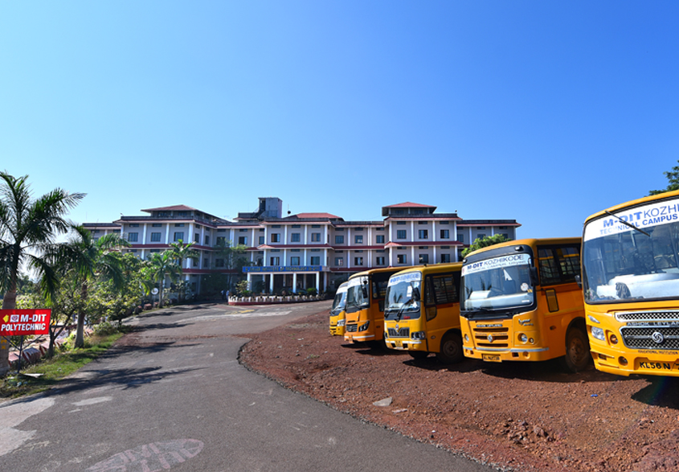

M Dasan Institute of Technology (M-DIT) KOZHIKODE was established in 2012-13., with a total of seven academic departments. The technology institute was named after the late dynamic visionary Shri M.Dasan, former Member of Kerala Legislative Assembly. The programs offered at M-DIT extend beyond the horizon of engineering and also cover the key aspects of management. The college is approved by the All India Council for Technical Education, New Delhi and affiliated to the APJ Abdul Kalam Technological University (KTU).
M-DIT KOZHIKODE is a venture of M. Dasan Memorial Co-operative Institute of Engineering and Information Technology. In a short span of time, the Institute has carved a niche in the field of technical education in the state through its advanced courses in engineering and technology and has become one of the most preferred institutions for aspiring students in the state. Students at M-DIT enjoy the twin advantage of quality education and serene environment, at the picturesque hinterlands of the campus located at Ulliyeri, Kozhikode.
To be a center of excellence in the nation in quality education and innovative
research that can create a better tomorrow.